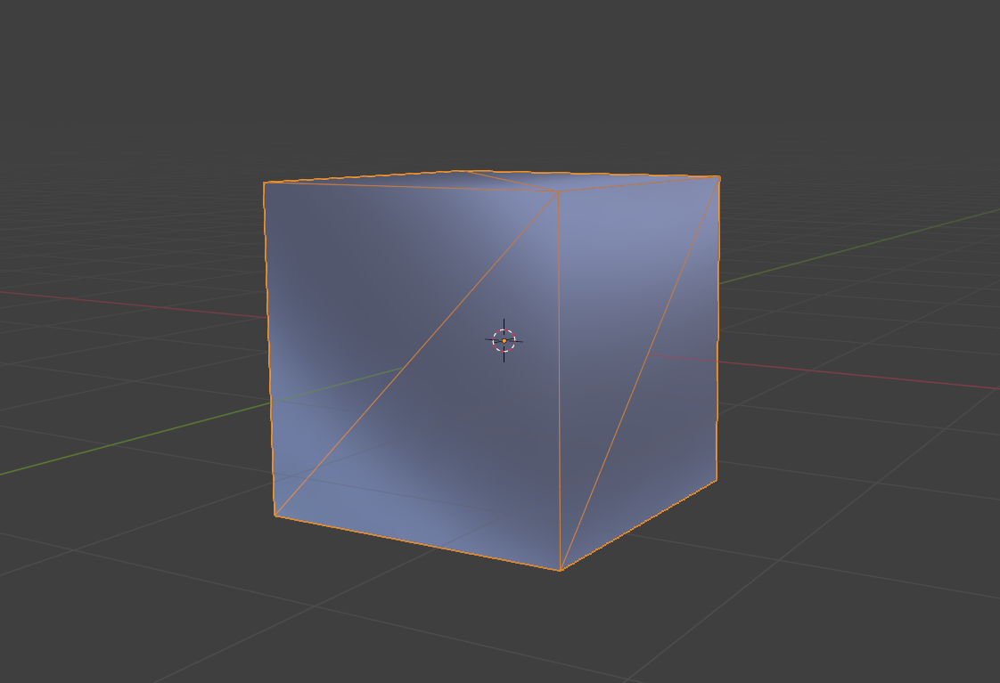
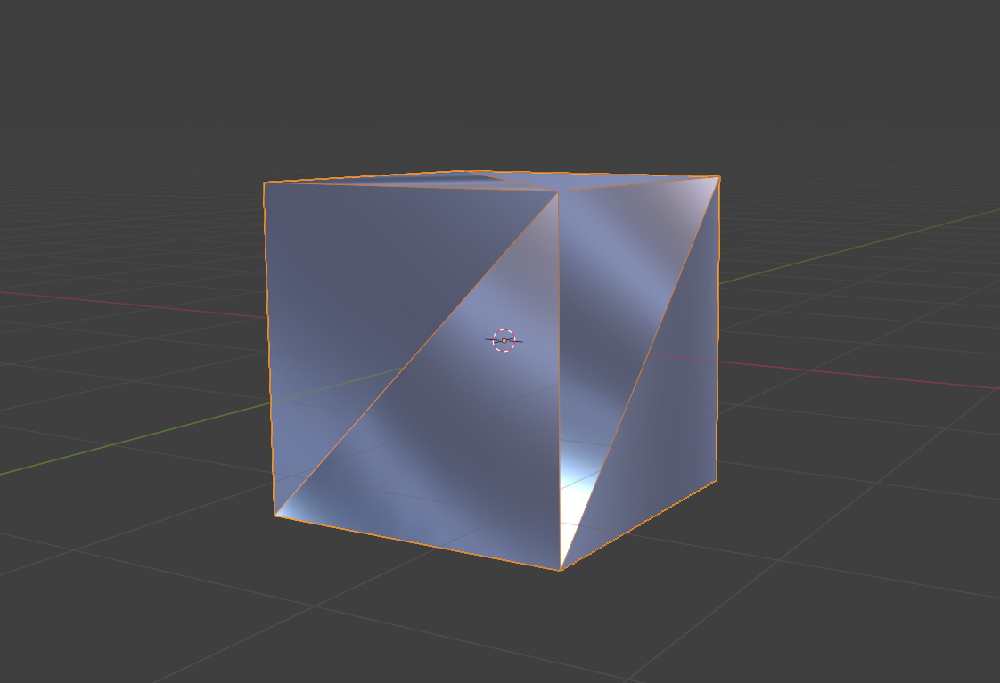

Guide Baking
Simple Export ships with 2 baking presets: Highpoly-default and Lowpoly-default. This video illustrates how to set up a baking collection and export it using the Simple Export addon. Simply select the preset from the dropdown menu. And create a new export Collection. In this example I use different methods to create the export collection:
- Plus button in the Export List
- Right click on the collection in the Outliner
- Right click on the collection in the 3D Viewport
All have the same effect. The export collection will be created with the correct settings and the baking preset applied. The collection will be saved in a newly create 'bake' folder relative to the .blend file. The export path can be adjusted in the Export Collection settings.
Warning
Relative paths are currently not supported by the input field and appear red in the text field. This is a known issue and a current limitation by blender. This has no effect on the functionality of the addon.
Blender FBX Parameter Documenation: FBX Exporter Documentation
Highpoly-default Preset
| Setting | Value | Notes |
|---|---|---|
| Path Mode | Strip |
Filename only: |
| Scale | 1.0 |
Keep the current Scale |
| object_types | 'MESH', 'OTHER', EMPTY' |
Mesh should be obvious, Other enables object types like curves and metaballs to generate high poly geometry and empties are enabled as they may also contain object information when using systems like the collection instancing. |
| Apply Scaling | FBX_SCALE_UNITS |
Apply custom scaling to each object transformation, and units scaling to FBX scale. |
| Custom Properties | True |
Custom Properties can make the files slightly bigger but there might be edge cases you want to use them in your pipeline. |
| Apply Unit | True |
Take into account current Blender Unit settings |
| Forward Axis | - Y Forward |
Matches Unreal’s coordinate system |
| Up Axis | Z Up |
Ensures proper world orientation |
| Apply Unit | ✅ Enabled |
Ensures proper world orientation |
| Use Space Transform | ❌ Disabled |
Helps maintain consistent transforms |
| Apply Transform | ❌ Disabled |
Avoids hierarchy issues with animations |
| Smoothing | Face |
Face – Write face smoothing. |
| Apply Modifiers | ✅ Enabled |
Apply Modifiers, Apply modifiers to mesh objects (except Armature ones) - WARNING: prevents exporting shape keys. This setting will use the Modifier Render settings by default. |
| Tangent Space | ❌ Disabled |
The Tangent Space (composed of binormal, tangent vectors and normals) isn't really important for the Hight Poly meshes. It further is only supported for Tris/Quad geometry and meshes only. N-gons and other objects types can be valid input meshes for high poly geometry. Just make sure they shade correctly. |
| Triangulate Faces | ❌ Disabled |
Triangulation is diabled as Ngons etc. can often be very useful for high polys and result in proper shading without a lot of effort. |
| Add Leaf Bones | ❌ Disabled |
Not relevant for baking |
| Animation Export | ❌ Disabled |
Not relevant for baking |
Tangent Space and Triangulate Faces are disabled for high-poly meshes compared to the low-poly preset. This is because it is sometimes easier to get nice shading on high-poly meshes with N-Gones and triangulaten changes that shading as well as tangent space export does not work with N-Gons. As long as the shading looks good these settings do not matter for the high poly.
Lowpoly-default Preset
| Setting | Value | Notes |
|---|---|---|
| Path Mode | Strip |
Filename only: We only need the material name and not the full texture paths for the baking |
| Scale | 1.0 |
Keep the current Scale |
| object_types | 'MESH', EMPTY' |
Only export Meshes and empties (can be used to export meshes within collection instances) |
| Apply Scaling | FBX_SCALE_UNITS |
Apply custom scaling to each object transformation, and units scaling to FBX scale. |
| Forward Axis | - Y Forward |
Matches Unreal’s coordinate system |
| Up Axis | Z Up |
Ensures proper world orientation |
| Apply Unit | ✅ Enabled |
Ensures proper world orientation |
| Use Space Transform | ❌ Disabled |
Helps maintain consistent transforms |
| Apply Transform | ❌ Disabled |
Avoids hierarchy issues with animations |
| Smoothing | Face |
Edge smoothing can cause shading issues |
| Apply Modifiers | ✅ Enabled |
Ensures the final mesh is exported |
| Tangent Space | ✅ Enabled |
Required for correct normal maps in UE |
| Triangulate Faces | ❌ Disabled (Recommended) |
UE prefers triangulated meshes for LODs |
| Add Leaf Bones | ❌ Disabled |
Unreal doesn’t need extra bones |
| Animation Export | ❌ Disabled |
Only exporting static meshes |
Triangulation and Tangent Space are enabled for low-poly meshes. This is to ensure the shading will look exactly the same when baking and in engine.
Why is triangulation disabled for low-poly meshes by default?
Triangulation is disabled by default for low-poly meshes because the automatic triangulation in the exporter does not maintain the Normal and can result in unpredictable shading results. The result is the same as using the Triangulate modifier but without "Keep Normals" enabled. If you want to use the automatic triangulation in the exporter you can enable it in the preset or on the export collection. However, it is recommended to use a Triangulate modifier with "Keep Normals" enabled on the low-poly meshes instead. This way you have more control over the triangulation and can ensure consistent shading results. Automatic triangulation will be added as custom Pre Export Operation.
 
Baking Example
Here is the test example